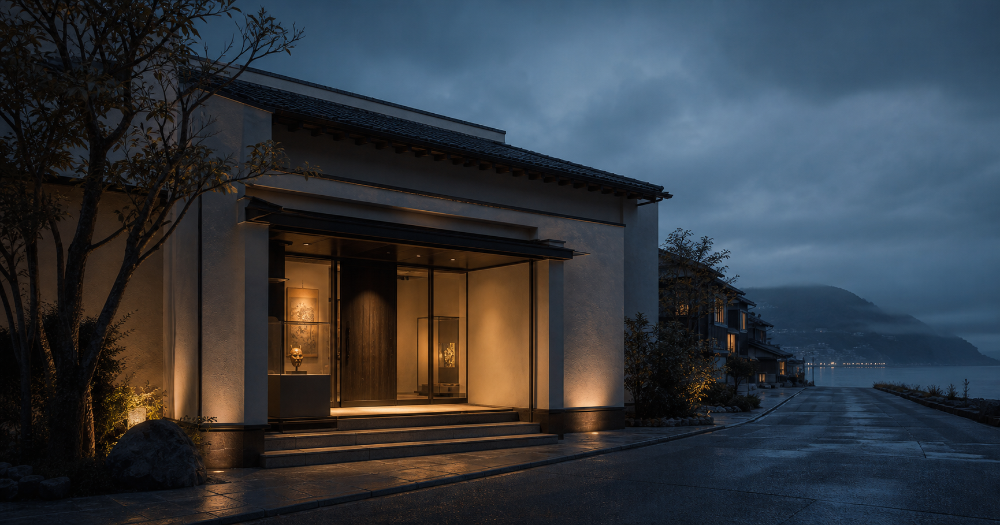
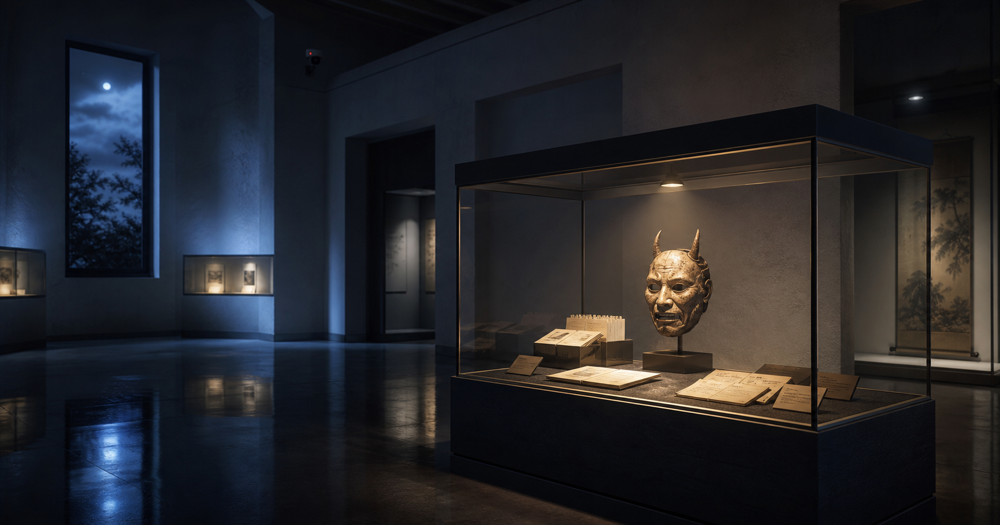

01.
Message
白楼民俗資料館は、海沿いの集落に残る祭礼、生活用具、古文書、写真台帳を保存し、地域の記憶を未来へ渡すための小さな資料館です。
一部資料では、旧ラベルと新台帳の照合を続けています。確認中の内容は、確定した情報ではなく調査途中の注記として公開しています。
02.
Exhibitions

灯明皿、祭礼面、漁具、古い写真台帳から、白楼町沿岸部に残る信仰と暮らしを紹介します。
2026.05.01 - 2026.06.30
03.
Event Calendar
04.
News
05.
Collection Search
資料番号、年代、分類で公開資料を確認できます。照合中の資料は注記を付けて掲載しています。